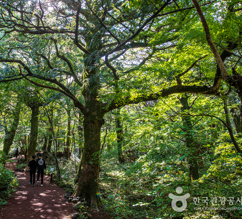
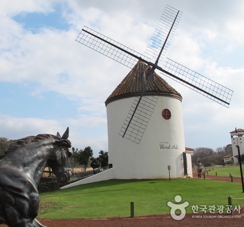
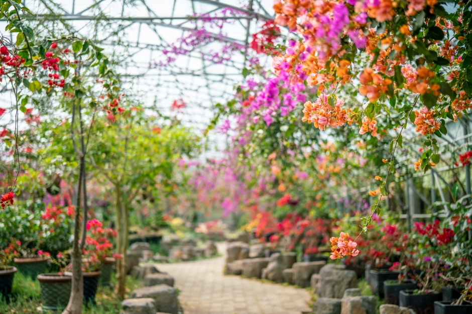
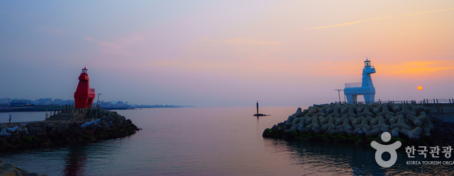

주요 관광지
-

비자림
세월이 녹아든 비자림은 500~800년생 비자나무들이 자생하는 세계적으로도 희귀한 장소다. 벼락 맞은 나무부터 긴 세월이 느껴지는 아름드리 나무까지 다양한 비자나무를 만날 수 있다.
-

에코랜드 테마파크
에코랜드는 1800년대 증기 기관차인 볼드윈 기종 모델의 기차를 타고, 약 4.5km 거리의 곶자왈을 체험하는 테마파크이다. 곶자왈은 숲이라는 뜻의 '곶'과 돌밭이라는 뜻의 '자왈'이 합쳐진 제주말로, 화산이 분출할 때 용암이 덩어리로 쪼개져 요철 지형이 만들어지면서 형성된 독특한 숲을 일컫는다.
입장료 | 일반 14,000원 청소년 12,000원 어린이 10,000원
-

제주 한림공원
제주 한림공원은 10만여평의 황무지 모래밭에 야자수 씨앗을 파종하여 만든 테마공원이다. 9가지 다양한 테마가 펼쳐지는 한림공원은 세계 각국의 저명인사들이 방문한 곳으로, 국내외 관광객이 찾는 세계적인 관광명소이다. 5월 6월 사이에는 꽃축제도 한창 열려, 다양한 열대 식물, 혹은 꽃들을 볼 수 있다.
입장료 | 어른 12,000원 청소년 8,000원 어린이 7,000원 -

이호테우해변
이호테우해변은 조랑말 등대로 제주도 사진 찍기 좋은 곳으로 잘 알려져 있다. 붉은 조랑말과 흰색의 조랑말은 극명하게 대조되는 색감이 우리에게 이국적인 풍경을 선사한다. 또한 이호테우해변 길목에는 아카시아 숲이 우거져 있고, 모래사장 뒤에는 소나무 숲이 형성되어 있다. 소나무 숲 사이에는 캠핑장이 마련되어 있어 여름이면 텐트를 가지고 캠핑을 즐기러 오는 사람들이 많다.
맛집 및 카페
-

우진해장국
한식
주소 | 제주 제주시 서사로 11 -

델문도
카페/베이커리
주소 | 제주 제주시 조천읍 조함해안로 519-10 -
자매국수
한식
주소 | 제주 제주시 탑동로11길 6